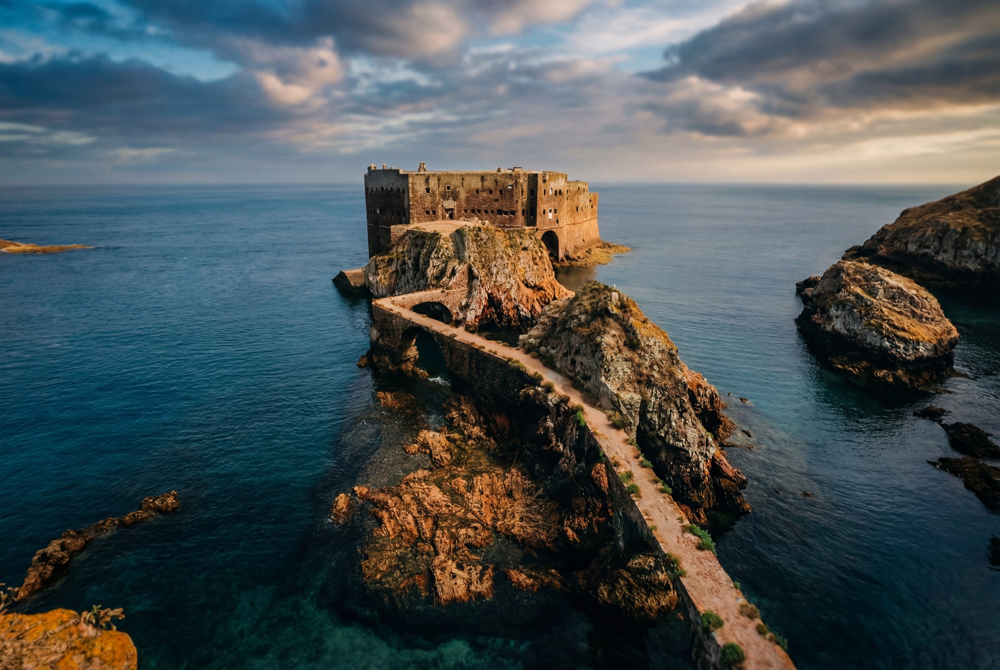
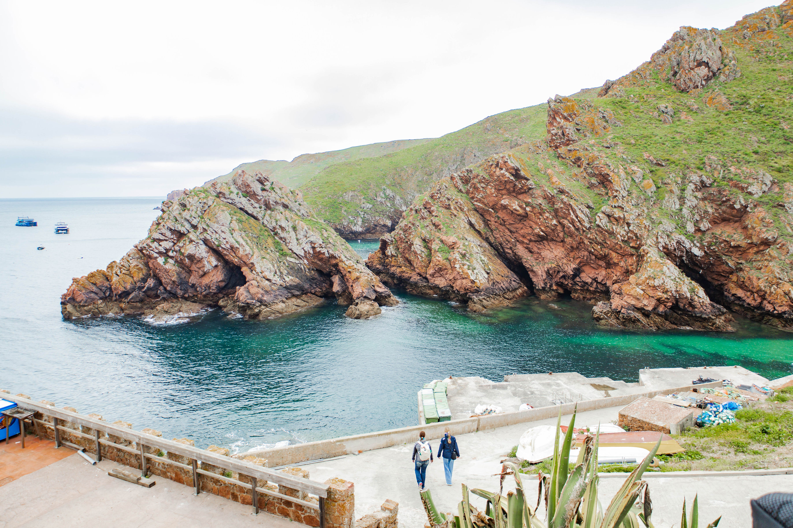

Na ilha


Alojamento e restauração
A Berlenga tem o essencial para tornar a visita inesquecível — sem o supérfluo. Os serviços disponíveis são deliberadamente limitados para proteger a reserva natural.
Alojamento & Restaurante
Mesa da Ilha
O principal espaço de alojamento e restauração da ilha. Quartos simples com vista para o mar e um restaurante com peixe e marisco frescos — adormecer ao som das ondas e acordar com a ilha para si só. Abertura sazonal (Junho a Setembro).

Alojamento Histórico
Forte de São João Baptista
A Pensão da AABerlenga funciona dentro do histórico Forte de São João Baptista, construído no século XVII. Uma experiência única — dormir entre muralhas seculares com o oceano Atlântico a toda a volta. Abertura sazonal.

Snack Bar
Castelinho Snack Bar
Refeições leves, sandes, gelados, bebidas e sumos frescos numa das localizações mais fotogénicas da ilha — com vista directa para a Fortaleza de São João Baptista. O sítio perfeito para uma pausa a meio da exploração.
Campismo
Parque de Campismo
A única área de campismo autorizada da ilha. Experiência minimalista sob o céu estrelado da reserva natural. É também possível alugar socalcos — terraços rochosos sobranceiros ao mar — para uma vivência ainda mais próxima da ilha.